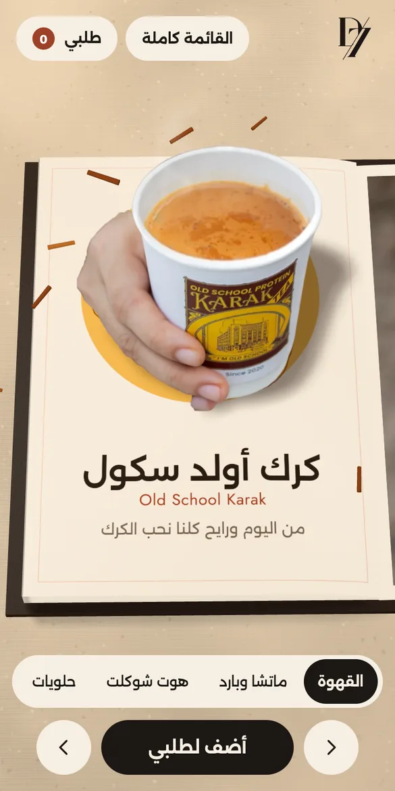

أعمال مختارة · تصميم وتطوير
كتب ومنيوهات ثلاثية الأبعاد تُقلَّب على الجوال
أحوّل ملف PDF أو صور المنتجات إلى كتاب حيّ: يقلّبه الزائر بإصبعه، ويلوّن صفحاته، ويدير المنتجات بيده. يفتح من رابط أو QR، بلا تطبيق.
٠١ · ورش DoO
ألغاز دوو الملوّنة: لوّن واكشف الشخصية
كتاب تلوين بالأرقام لشخصيات دوو الخاصة. كل صفحة لغز؛ لا تعرف من يختبئ فيها حتى تكتمل الألوان، ثم تقفز الشخصية مجسّمة من الورق.


- من PDF إلى لغزقرأت أرقام كل منطقة من ملف الطباعة وطابقتها مع الحلّ، فصار كل لغز قابلاً للحلّ على الشاشة.
- الكشف يكافئعند اكتمال اللون تبرز الشخصية بعمق حقيقي وقصاصات احتفال.
- يحفظ التقدّميكمل الطفل لغزه لاحقاً من حيث توقّف، ويحفظ رسمته صورة.
- محتوى للنشرفيديو تيك توك وستوري تشويقي من الموقع نفسه، بقياس ١٠٨٠×١٩٢٠.
٠٢ · مقهى قهوة مختصة
منيو District 7: المس الكوب لتديره
منيو على شكل كتاب جلدي يُفتح على الطاولة من QR. صور المشروبات مقصوصة ومجسّمة، يديرها الزبون بإصبعه، ويجمع طلبه في سلّة قبل أن ينادي الباريستا.



- صور حقيقية مجسّمةقصصت صور المقهى وأعطيتها عمقاً، فيبرز الكوب من الصفحة.
- تفاصيل لكل مشروبحبوب قهوة، أعواد قرفة، ومكعبات ثلج تتحرك حول المنتج.
- طلب أسهليضيف الزبون مشروباته ويعرضها على الباريستا من شاشته.
- خفيف على الجواليضبط جودة الرسم حسب الجهاز ليبقى التقليب سلساً.
مشروع تجريبي (concept) لمقهى District 7.
٠٣ · ورش DoO
العودة للطفولة: كتاب تلوين بطبقات بارزة
كتاب تلوين للكبار يعيد رسوم كرتون الطفولة. يختار الزائر لونه ويلمس المنطقة، فتنتفخ الطبقة الملوّنة وتبرز عن الصفحة.


- كل منطقة طبقةقسّمت الرسمة إلى مناطق، ولكل منطقة ارتفاع يبرز بعد تلوينها.
- اقترب ودوّروضع «تأمّل» يقرّب الصفحة ويدوّرها لرؤية العمق.
من ملفك إلى كتاب حيّ في أربع خطوات
PDF للطباعة، أو صور المنتجات والأسعار.
أقصّ الصور وأقرأ مناطق الرسم وأحسب عمق كل جزء.
صفحات تُقلَّب وتُلوَّن، بألوان هويتك وموسيقاها.
رابط مجاني ورمز QR للطاولة أو للورشة، وفيديو للسوشال.